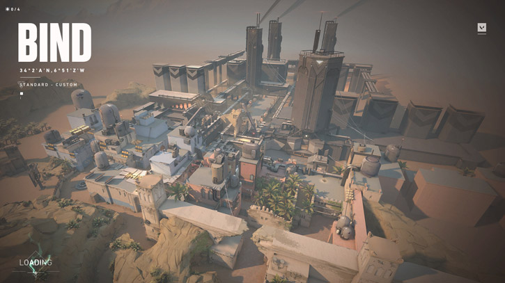

BIND
BIND est une map composé de 2 sites (pour planter la bombe "le spike").Le premier site est le site A, qui est une zone plus grande que le site B. Elle dispose de plusieurs boxs permettant aux défenseurs de prendre une ligne.Egalement d'une fenêtre en hauteur permettant la prise de ligne avec un operator.Le second site se situe est plus difficilement accessible mais donc plus facilement défendable lorsque la bombe est plantée.Sa particularité réside dans ses téléporteurs, qui permettent de traverser la map de long en large et tenter de prendre par surprise son adversaire. Cependant, ils sont très bruyants et il est facile de se faire punir à leur sortie, qu’on soit venu attaquer ou défendre.